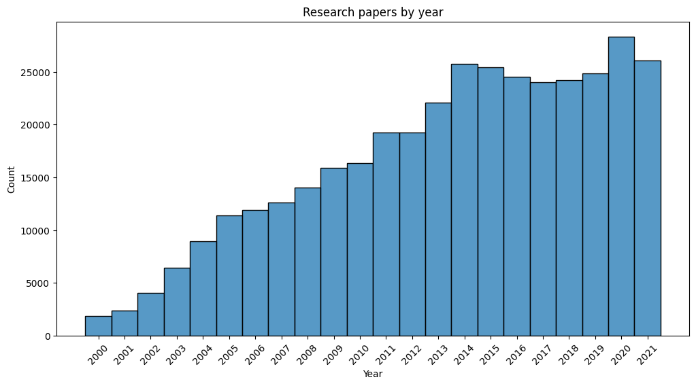
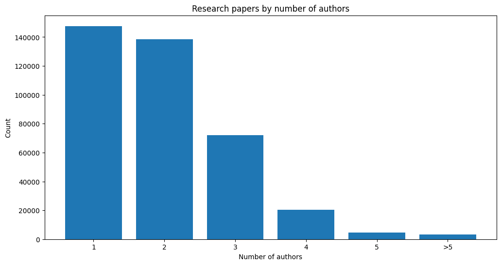

Papers Analysis
Papers Analysis¶
import pandas as pd
import seaborn as sns
import matplotlib.pyplot as plt
Setting matplotlib parameters
plt.rcParams["figure.figsize"] = [12, 6]
Read the data
df_paper = pd.read_csv("paper.csv", lineterminator="\n")
df_nep = pd.read_csv("nep.csv")
df_nep_inclusion = pd.read_csv("nep_inclusion.csv")
df_nep_issue = pd.read_csv("nep_issue.csv")
df_authorship = pd.read_csv("authorship.csv")
min_year = 2000
max_year = 2022
sns.histplot(data=df_paper.year[df_paper.year.between(min_year, max_year)], discrete=1)
plt.title("Research papers by year")
plt.xlabel("Year")
plt.xticks(range(min_year, max_year + 1, 1), rotation=45)
plt.show()

(
pd.DataFrame(
df_paper.groupby("institution").count().title.sort_values(ascending=False)
)
.rename(columns={"title": "count"})
.head(10)
.style.set_caption("Top 10 institutions by published papers")
)
| count | |
|---|---|
| institution | |
| University Library of Munich, Germany | 30027 |
| National Bureau of Economic Research, Inc | 20463 |
| Institute of Labor Economics (IZA) | 14808 |
| HAL | 13249 |
| arXiv.org | 10906 |
| C.E.P.R. Discussion Papers | 10373 |
| Agricultural and Applied Economics Association | 5529 |
| The World Bank | 5236 |
| CESifo | 4575 |
| Center for Open Science | 4359 |
df_pa = df_paper.merge(df_authorship, left_on="pid", right_on="paper__pid", how="left")
df_pa.author__aid = df_pa.author__aid.str.replace(":", " ").str.title()
(
pd.DataFrame(
df_pa.groupby("author__aid").count().title.sort_values(ascending=False)
)
.rename(columns={"title": "count"})
.head(10)
.style.set_caption("Top 10 authors by published papers")
)
| count | |
|---|---|
| author__aid | |
| Asongu Simplice | 1559 |
| Bank World | 907 |
| Gupta Rangan | 748 |
| Mcaleer Michael | 644 |
| Fund International Monetary | 622 |
| Oecd | 508 |
| Tol Richard | 397 |
| Odhiambo Nicholas | 358 |
| Van Reenen John | 316 |
| Yogyakarta Perpustakaan Stipram | 305 |
num_authors = (
pd.DataFrame(df_pa.groupby("pid").count().title.sort_values(ascending=False))
.rename(columns={"title": "count"})
.value_counts()
)
num_top = 5
height = list(num_authors[:num_top].values) + [num_authors[num_top:].sum()]
bars = list(range(1, num_top + 1)) + [f">{num_top}"]
y_pos = range(len(bars))
plt.bar(y_pos, height)
plt.xticks(y_pos, bars)
plt.title("Research papers by number of authors")
plt.xlabel("Number of authors")
plt.ylabel("Count")
plt.show()

pd.DataFrame(
df_pa.groupby("author__aid")
.institution.nunique()
.sort_values(ascending=False)
.head(10)
).style.set_caption("Top 10 authors affilieated with the most institution")
| institution | |
|---|---|
| author__aid | |
| Ongena Steven | 46 |
| Ottaviano Gianmarco | 40 |
| Peri Giovanni | 39 |
| Clark Andrew | 39 |
| Eichengreen Barry | 39 |
| Verdier Thierry | 39 |
| Devereux Michael | 38 |
| Cabrales Antonio | 37 |
| Schularick Moritz | 36 |
| Spagnolo Giancarlo | 36 |